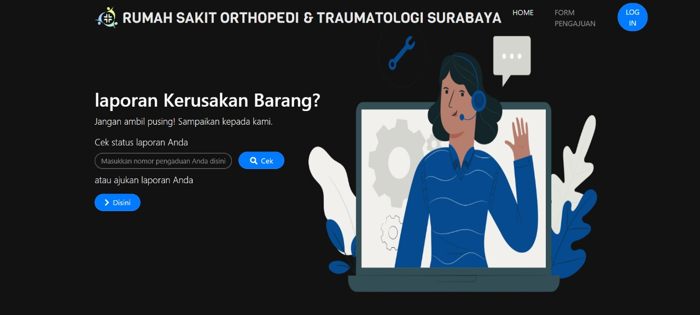
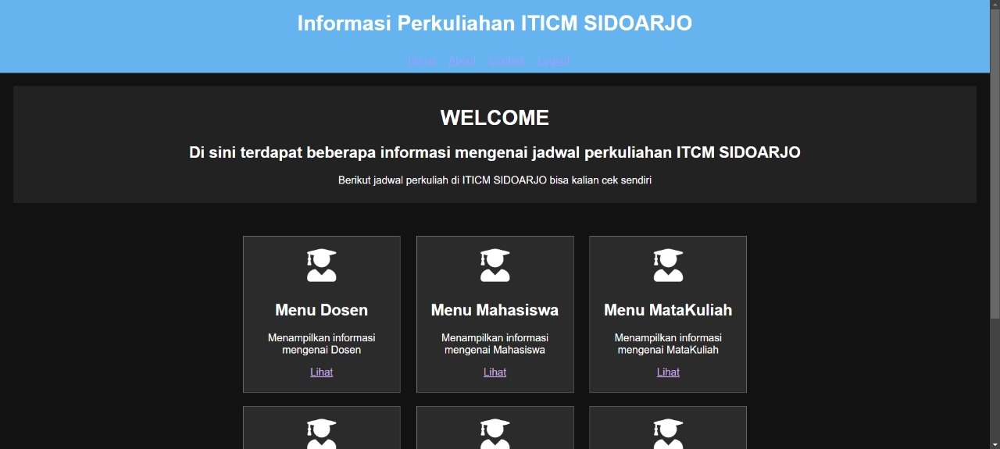

My Projects

Saya pernah Membuat sebuah project untuk perusahaan saya sebelumnya. Disini saya membuat project untuk kebutuhan rumah sakit. tujuan saya membuat project ini untuk mempermudah semua unit unit rumah sakit dalam melaporkan komplain baik bersifat sistem,hardware dan software. dan juga mempermudah IT dalam dokumentasi laporan.

Saya membuat project untuk tugas perkuliahan saya. dalam project ini saya disuruh membuat sebuah jadwal untuk kuliah baik jadwal Dosen, Mahasiswa, Mata Kuliah, Krs, Semester. project ini bertujuan agar dosen dan mahasiswa bisa mengecek jadwal mereka dengan mudah dan efisien.
Contact Me!
No.Whatshaap
+6285745561310
adit_frm
adita.firmansyah2728@gmail.com